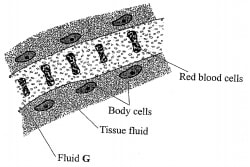
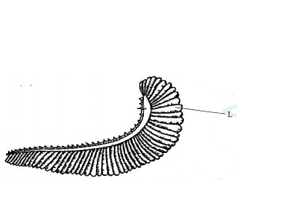
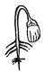
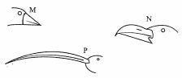
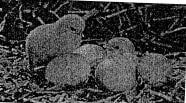
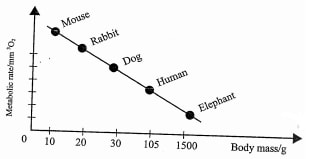

Answer all the questions in the spaces provided.
1. (a) Name the cell organelle found in abundance in the white blood cells.(1 mark)
(b) Give a reason for your answer in (a) above.(1 mark)
2. State two observable features that place a millipede into its Class. (2 marks)
3. Which sets of teeth would be used in chewing sugarcane for maximum extraction of sap? (2 marks)
4. A group of font two students placed a fresh leaf in warm water. They observed that air bubbles formed on the surface of the leaf.
(a) What biological process were they investigating?(1 mark)
(b) Name the structures from which the air bubbles were coming from. (1 mark)
(c) Explain the distribution of the structures named in (b) above on the leaf surfaces of a land plant. (2 marks)
5. State why it is important for plants to lose water to the atmosphere.(3 mark)
6. The diagram below illustrates tissue fluid and cells surrounding a capillary.

(i) Name fluid G.(1 mark)
(ii) Give two ways by which fluid G is different from tissue fluid.(2 mark)
7. (a) Define respiration.(1 mark)
(b) State three activities in the human digestive system that depend on respiration.(3 mark)
8. State three ways in which blood capillaries are structurally adapted to their functions.(3 mark)
9. The diagram below represents an organ in a bony fish.

(a) Name the organ.(1 mark)
(b) Describe how air in water reach the capillaries inside structure L.(3 mark)
10. Name two products of respiration in plants. (2 marks)(2 mark)
11. (a) State one homeostatic role of the human skin. (1 mark)
(b) Name three structures of the skin essential for its homeostatic function. (3 marks)
12. Explain why the nephron is long and convoluted. (3 marks)
13. State two limitations of using a quadrat to estimate the population of organisms. (2 marks)
14. The diagram below illustrates a germinating seedling.

(a) Name the type of germination illustrated in the diagram. (1 mark)
(b) Describe how the type of germination named in (a) above is brought about. (3 marks)
15. Explain why a bony fish dies shortly after being removed from water.(4 mark)
16. Name the bones that articulate to form a ball and socket joint at the hip.(2 marks)
17. Explain the role of carbonic anhydrase in red blood cells.(4 marks)
18. A tall, light skinned lady with pimples on her face has long hair and limps.
(a) List two features which the lady has that are due to inheritance. (2 marks)
(b) Explain why most recessive genes are expressed phenotypically in male offspring of humans. (3 marks)
19. The diagrams below illustrate some forms of beaks in birds.

(a) Which diagram represents the beak from which the others are likely to have evolved? (1 mark)
(b) Explain your answer in (a) above. (3 marks)
20. (a) Define the term analogous structures.(1 marks)
(b) Give two illustrations of analogous structures in mammals.(2 marks)
21. State two ways in which plants with weak stems obtain mechanical support.(2 marks)
22. What does the term evolution mean?(1 marks)
23. State two characteristics of living things illustrated in the photograph below.(2 marks)

24. Explain why a camel has a longer nephron than a whale.(1 mark)
25. Desert kangaroo rats spend most of their time in underground burrows.
(a) Name this type of behavioural activity (1 mark)
(h) Explain the significance of this behaviour to the organism. (3 marks)
26. State two advantages terrestrial animals have in excreting urea as their main nitrogenous waste product. (2 marks)
27.Below is a graphical representation of how basal metabolic rates compare in various animals.

From the graph explain why the mouse has a higher breathing rate than the elephant.(3 marks)
Lysosomes/golgi apparatus
White blood cells fight pathogens to protect the body, the lysosomes contain lytic enzymes which destroy pathogens;/golgi apparatus synthesize lysosomes which contain lytic enzymes that destroy parthogens
Each segment has two pairs of legs; Pair of short antennae; Has two clumps of many simple eyes; Has anterior genital pore/apparatus; Has three body parts (head, thorax and trunk);
3.Which sets of teeth would be used in chewing sugarcane for maximum extraction of sap? (2 marks)
Premolars; Molars;
Photosynthesis;/gaseous exchange in plants;
Stoma/somata;
Are more on the lower surface of terrestrial plants/fewer on the upper surface; to reduce transpiration;
Cools the plant; For uptake of water up the xylem vessels; Mechanism through which mineral elements are transported in the plant; Removal excess water; Maintains turgor pressure;
6.
(i) (Blood) plasma
(ii) Has (more large) proteins/blood platelets; High (hydrostatic) pressure/low pressure of tissue fluid, Has red blood cells;
7.
(a) Process by which living organisms/cells break down /oxidize (organic) food materials into simpler compounds to release energy;
(b)
Peristalsis; Absorption of materials; Chewing (movement of jaw muscles); -Churning; Secretion of digestive enzymes
Numerous to increase surface area through which materials diffuse; Thin/one-cell thick/single cell epithelium/endothelium for faster diffusion
Lined with a single cell epithelium for faster diffusion; Are selectively permeable for passage of materials; Narrow lumen to maintain preesure
Gill
Fish mouth opens lowering pressure in buccal cavity and water rushes in; mouth closes increasing pressure that forces water into the gill cavity/opercular cavity; O2 rich water flows over the gills in a counter current direction to capillary blood flow; causing O2 to diffuse into the gill capillaries
10. Name two products of respiration in plants.(2 mark)
Water; Carbon (IV)oxide; Energy/Adenosine Triphosphate; Alcohol/ethanol/ethyl alcohol
Thermoregulation; Osmoregulation; Regulating salt balance
Blood vessels/arterioles; Hair; Sweat glands; Erector pili muscles; Nerve endings
To fit in the (limited space) in the kidney/occupy less space; Increase surface area for (selective) reabsorption; Allow for more time for (selective) reabsorption;
Cannot be used for most animals/plants; Assumes organisms are evenly distributed; Inaccuracy (over/under-estimation);
Epigeal
Hypocotyl elongates faster than the epicotyl; pushing cotyledons above the ground
Fish uses dissolved oxygen for gaseous exchange; gill filament epithelium dries up; gill filaments clamp together; surface area for gaseous exchange reduced; oxygen lacks moist surface for dissolution causing death(due to suffocation);
Femur; Pelvic girdle
Converts carbon ([V) oxide to carbonic acid; which easily dissociates into hydrogen ions (H+ and hydrogen carbonates (HCO3-for easier transportation; reducing acidity in blood
Height (tallness); Long hair; Skin colour (light);
Most of the genes are sex-linked and are carried on the X chromosomes; boys receive X chromosomes from the mother (and Y chromosomes from the father); if the X carries a recessive gene, it is more likely to be phenotypically expressed in boys
Beak M
Beak M is simple/basic; original beak; the birds separated to occupy different niches; and specialized for different diets; leading to more complex/developed beaks over time
Different embryonic origin but evolved to perform similar functions (due to exploitation of same kind of environment);
Wings of bats and insects; Eyes of mammals and molluscs; Limbs of mammals and arthropods; Flipper in whales/dolphins and fins of fish;
Twinning around a support; Use of tendrils/spines/thorns/hooks (to cling on nearby plants/trees); Turgid cells (in their stems)
Gradual change from simple life forms to complex forms over a(long) period of time
Growth; and development
A camel is a desert animal, a longer nephron increases the surface area for reabsorption of water; to conserve it; a whale is aquatic animal, (does not need to conserve water);
Aestivation
(b) Explain the significance of this behaviour to the organism. (3 marks)
Reduced metabolic activity; hence low rate of respiration;Minimizing water loss/ dessication (to the environment)
Toxic; Very soluble
A small molecule(easily filtered in the kidneys) Requires less water to excrete
Mouse is active/has a large surface area to volume ratio; hence has a higher metabolic rate (rate of breathing) to cope with the rate at which energy (oxygen) is consumed or lost to the environment; an elephant is less active/has a small surface area to volume ratio hence has a lower rate at which energy (oxygen) is used or lost; or Mouse is small in size/has large surface area to volume ratio; hence has a metabolic rate (rate of breathing) to cope with the rate at which oxygen is consumed/energy is lost to the environment; an elephant is large in size/has small surface area to volume ratio; hence has a lower rate at which oxygen/energy is lost;